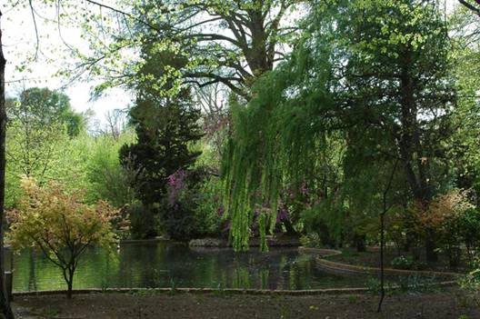
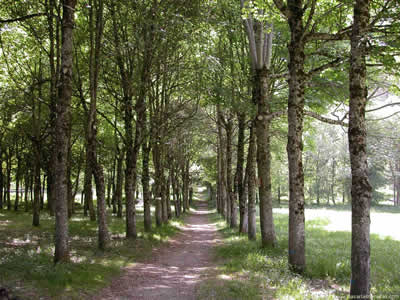

Las metáforas, analogías y símbolos de la Biblia, han sido relatadas, en forma poética, con un bello y sencillo lenguaje, para descifrar los mensajes dirigidos al hombre y a su mujer. Génesis 1,27. Seres racionales y pensantes para aprender a vivir y conocer las verdades que encierran, al alcance de todos y a los que quieran disfrutarlos.
(Nos habla del Jardín del Edén. ¿Alguien lo conoce, alguien disfruta de la Naturaleza, que le ha creado Dios para su felicidad?)
Un Jardín con toda clase de árboles agradables a la vista y buenos para comer. Y en MEDIO, (del Jardín del Edén) El árbol de la Vida y el árbol de la Ciencia del bien y del mal! G. 2,8.
(¿Cuántos disfrutan de su Jardín del Edén, en donde crecen toda clase de árboles agradables a la vista y buenos para disfrutar sus frutos? ¿O el hombre y la mujer prefieren el segundo árbol?)
Del Edén sale un río que lo regaba y se dividía en 4 brazos.
1º Pisón, donde hay oro fino, piedras preciosas y aromas.
2º Guijón. 3º Tigris. 4º Eúfrates.
Y Yavé tomó al hombre y lo puso en el Jardín del Edén, para que lo cultivara y lo cuidara. G 2,15.
(¿Lo cuida el hombre y su mujer? ¿Cuántos cultivan y cuidan su Jardín del Edén?)
Y DIOS le dió esta orden al hombre: ¨Puedes comer de cualquier árbol que haya en el Jardín, menos del árbol de la Ciencia del bien y del mal; porque el día que comas de él, morirás sin remedio¨. G 2,16

(¡Tú eres LIBRE! TODO DEPENDE DE TI. En MEDIO está tu árbol de Vida. ¿Tú cuidas y cultivas tu árbol de Vida? ¡EL MÉRITO ES TUYO! o ¿Comes de cualquier árbol del Jardín que te rodea? ¿Prefieres elegir por ti mismo, y seguir el ejemplo de Eva y Adán y culpar a otros por hacerlo? ¿Prefieres vivir o será mejor morir?)
(¿Alguna vez has dado gracias al Creador por tu vida? ¿Le has pedido te ayude a cultivar y cuidar los árboles y la vida de tu Jardín de Edén?)
